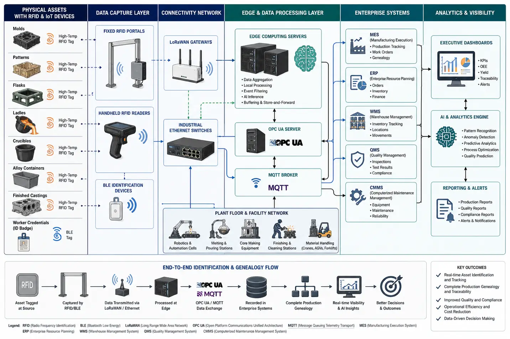

FoundryCast AI delivers AI and IoT software for foundries and casting operations with RFID workforce identification, furnace access control, mold and tooling tracking, alloy and scrap inventory management, casting work-in-progress visibility, heat lot traceability, BLE, LoRaWAN, GPS yard tracking, edge computing, and MES/ERP integration.
Contact UsFoundries represent one of the most demanding manufacturing environments within the Primary Metals Industry. Every production cycle involves continuous movement of raw materials, charge materials, molds, flasks, core boxes, ladles, crucibles, production tooling, work-in-progress castings, finished components, forklifts, and personnel across multiple manufacturing areas. Maintaining accurate identification throughout these operations is essential for production efficiency, workforce safety, product quality, regulatory compliance, and customer documentation.
Typical production begins with receiving pig iron, steel scrap, return scrap, aluminum ingots, ferroalloys, and alloying additions before progressing through charge preparation, induction or cupola furnace melting, melt chemistry adjustment, slag removal, inoculation or degassing where applicable, mold preparation, pouring, cooling, shakeout, fettling, shot blasting, heat treatment, machining, dimensional inspection, non-destructive testing (NDT), warehouse storage, and customer shipment.
Traditional paper travelers, manual barcode recording, spreadsheets, and handwritten production logs often make it difficult to determine the real-time location of production assets, personnel, or heat lots. As production volumes increase, these limitations can affect production scheduling, inventory accuracy, tooling utilization, and quality investigations.
FoundryCast AI addresses these challenges by combining AI with industrial Internet of Things (IoT) identification technologies to create reliable digital identification throughout casting operations. AI and IoT integrates AI with RFID identification, Bluetooth Low Energy (BLE), LoRaWAN connectivity, GPS yard location technologies, edge computing, industrial communication networks, and enterprise manufacturing software. The objective is not environmental sensing but accurate identification, location awareness, and production traceability across the entire manufacturing lifecycle.
Rather than providing generic manufacturing software, FoundryCast AI is engineered specifically for metal casting environments, including iron foundries, steel foundries, aluminum foundries, investment casting facilities, permanent mold casting operations, high-pressure die casting plants, gravity die casting, shell molding, and precision casting manufacturers. The result is greater operational visibility, improved furnace workforce accountability, enhanced tooling utilization, accurate alloy inventory management, digital casting genealogy, and complete heat lot traceability from raw material receiving through final shipment.
This engineering block diagram illustrates how RFID, BLE, LoRaWAN, Industrial Ethernet, edge computing, OPC UA, and MQTT connect physical foundry assets with enterprise software platforms. It demonstrates end-to-end identification, production genealogy, enterprise data flow, and AI-driven analytics across MES, ERP, WMS, QMS, CMMS, warehouse operations, and executive dashboards.

Metal casting operations involve thousands of reusable production assets and continuously moving production batches. Patterns, molds, flasks, ladles, crucibles, chill plates, fixtures, pallets, alloy containers, and finished castings frequently move among molding lines, furnace areas, pouring stations, cooling zones, machining departments, inspection laboratories, warehouses, and shipping docks. Manual tracking often results in production delays when assets cannot be located quickly or production records require extensive reconciliation.
AI and IoT enables automated identification throughout these workflows by associating unique digital identities with workers, production equipment, tooling, and castings. Industrial RFID supports reliable identification of metal production assets using specialized on-metal and high-temperature RFID tags engineered for harsh foundry environments. BLE wearable devices improve workforce accountability around induction furnaces, cupola furnaces, electric arc furnace support areas, pouring stations, and maintenance zones. LoRaWAN provides long-range communication across large industrial campuses, while GPS assists with locating outdoor inventory, returnable containers, and scrap storage areas.
Identification events are processed locally through edge computing devices before securely synchronizing with Manufacturing Execution Systems (MES), Enterprise Resource Planning (ERP) software, Warehouse Management Systems (WMS), Quality Management Systems (QMS), and Computerized Maintenance Management Systems (CMMS). Standard industrial communication protocols such as OPC UA, MQTT, Modbus TCP, and REST APIs support reliable interoperability with existing production software while minimizing disruption to established workflows.
Modern foundries continue to increase automation while facing greater demands for quality assurance, traceability, workforce safety, inventory accuracy, and production efficiency. Identification gaps frequently occur because production assets are exposed to elevated temperatures, abrasive materials, heavy equipment movement, and complex routing between manufacturing departments.
Personnel safety is a top priority in melting, pouring, and molten metal handling operations. Furnace operators, maintenance technicians, crane operators, refractory specialists, mold technicians, and quality personnel frequently move between controlled work zones where access authorization and personnel accountability are essential.
Typical controlled areas include:
Industrial RFID enables continuous identification of patterns, match plates, core boxes, mold assemblies, flasks, chill plates, fixtures, production pallets, and maintenance tooling.
Foundries manage diverse charge materials including:
Each production batch progresses through: Charge preparation, Furnace melting, Melt chemistry verification, Spectrometer analysis, Pouring, Mold cooling, Shakeout, Fettling, Shot blasting, Heat treatment, Machining, Inspection, Packaging, Warehouse storage, and Shipping.
This workflow diagram illustrates complete identification and production genealogy across the foundry manufacturing lifecycle, from raw material receiving to shipping.
FoundryCast AI was developed using practical experience gained from industrial AI and IoT deployments across manufacturing environments where reliable identification, production traceability, and enterprise integration are critical to operational success. Created within Aperture Venture Studio with support from GAO, FoundryCast AI builds upon more than two decades of IoT experience serving thousands of customers and successfully delivering thousands of IoT projects across industrial sectors, including the Primary Metals Industry.
Our engineering specialists collaborate with manufacturing organizations to evaluate production workflows, identify appropriate identification technologies, define phased implementation strategies, and integrate AI and IoT software with existing enterprise systems.